Small model workflow
small_model_workflow.Rmd
library(SBC)
# use_cmdstanr <- TRUE # Set to false to use rstan instead
#
# if(use_cmdstanr) {
# library(cmdstanr)
# } else {
# library(rstan)
# }
library(cmdstanr)## This is cmdstanr version 0.4.0.9000## - Online documentation and vignettes at mc-stan.org/cmdstanr## - CmdStan path set to: C:/Users/Martin/Documents/.cmdstanr/cmdstan-2.27.0## - Use set_cmdstan_path() to change the path## Warning: package 'bayesplot' was built under R version 4.0.5## This is bayesplot version 1.8.1## - Online documentation and vignettes at mc-stan.org/bayesplot## - bayesplot theme set to bayesplot::theme_default()## * Does _not_ affect other ggplot2 plots## * See ?bayesplot_theme_set for details on theme setting## This is posterior version 1.0.1.9000##
## Attaching package: 'posterior'## The following object is masked from 'package:bayesplot':
##
## rhat## The following objects are masked from 'package:stats':
##
## mad, sd, var- Mixture with predictors for ratios
A lot of steps, but I still ignore all the completely invalid models (typos, compile errors, dimension mismatches, …)
Mixture component
model_first <- cmdstan_model("small_model_workflow/mixture_first.stan")
backend_first <- SBC_backend_cmdstan_sample(model_first)
generator_func_first <- function(N) {
mu1 <- rnorm(1, 3, 1)
mu2 <- rnorm(1, 3, 1)
theta <- runif(1)
y <- numeric(N)
for(n in 1:N) {
if(runif(1) < theta) {
y[n] <- rpois(1, exp(mu1))
} else {
y[n] <- rpois(1, exp(mu2))
}
}
list(
parameters = list(
mu1 = mu1,
mu2 = mu2,
theta = theta
),
generated = list(
N = N,
y = y
)
)
}
generator_first <- SBC_generator_function(generator_func_first, N = 50)
set.seed(68455554)
datasets_first <- generate_datasets(generator_first, 1)
results_first <- compute_results(datasets_first, backend_first)## - 1 (100%) fits had at least one Rhat > 1.01. Largest Rhat was 1.52.## - 1 (100%) fits had tail ESS undefined or less than half of the maximum rank, potentially skewing the rank statistics. The lowest tail ESS was NA.
## If the fits look good otherwise, increasing `thin_ranks` (via recompute_statistcs) or number of posterior samples (by refitting) might help.## - 1 (100%) fits had divergent transitions. Maximum number of divergences was 9.## Not all diagnostics are OK. You can learn more by inspecting $default_diagnostics, $backend_diagnostics and/or investigating $outputs/$messages/$warnings for detailed output from the backend.We have convergence problems, let us examine the pairs plots
results_first$stats## # A tibble: 3 x 15
## parameter simulated_value rank z_score mean median sd mad q5 q95
## <chr> <dbl> <dbl> <dbl> <dbl> <dbl> <dbl> <dbl> <dbl> <dbl>
## 1 mu1 3.13 53 -1.05 3.91 4.23 0.747 0.0261 2.14 4.27
## 2 mu2 4.27 355 0.939 3.31 3.43 1.02 1.19 1.52 4.53
## 3 theta 0.0528 14 -1.87 0.579 0.621 0.282 0.335 0.0773 0.966
## # ... with 5 more variables: rhat <dbl>, ess_bulk <dbl>, ess_tail <dbl>,
## # max_rank <int>, dataset_id <int>
mcmc_pairs(results_first$fits[[1]]$draws())
One thing that stands out is that either mu1 is tightly determined and mu2 is allowed the full prior range or the other way around. We also don’t learn anything about theta.
This might be puzzling but relates to bad usage of log_mix (TODO explain)
Fixing mixture
model_fixed_log_mix <- cmdstan_model("small_model_workflow/mixture_fixed_log_mix.stan")
backend_fixed_log_mix <- SBC_backend_cmdstan_sample(model_fixed_log_mix)
results_fixed_log_mix <- compute_results(datasets_first, backend_fixed_log_mix)We see nothing obviously wrong, let’s run a few more iterations.
results_fixed_log_mix$stats## # A tibble: 3 x 15
## parameter simulated_value rank z_score mean median sd mad q5
## <chr> <dbl> <dbl> <dbl> <dbl> <dbl> <dbl> <dbl> <dbl>
## 1 mu1 3.13 392 2.09 2.56 2.58 0.269 0.261 2.10
## 2 mu2 4.27 307 0.823 4.26 4.26 0.0171 0.0172 4.23
## 3 theta 0.0528 308 0.581 0.0380 0.0331 0.0255 0.0228 0.00688
## # ... with 6 more variables: q95 <dbl>, rhat <dbl>, ess_bulk <dbl>,
## # ess_tail <dbl>, max_rank <int>, dataset_id <int>
set.seed(8314566)
datasets_first_10 <- generate_datasets(generator_first, 10)
results_fixed_log_mix_2 <- compute_results(datasets_first_10, backend_fixed_log_mix)## - 10 (100%) fits had at least one Rhat > 1.01. Largest Rhat was 1.736.## - 9 (90%) fits had tail ESS undefined or less than half of the maximum rank, potentially skewing the rank statistics. The lowest tail ESS was NA.
## If the fits look good otherwise, increasing `thin_ranks` (via recompute_statistcs) or number of posterior samples (by refitting) might help.## Not all diagnostics are OK. You can learn more by inspecting $default_diagnostics, $backend_diagnostics and/or investigating $outputs/$messages/$warnings for detailed output from the backend.So there are some problems.
hist(results_fixed_log_mix_2$stats$rhat)
Let’s examine a single pairs plot:
mcmc_pairs(results_fixed_log_mix_2$fits[[1]]$draws())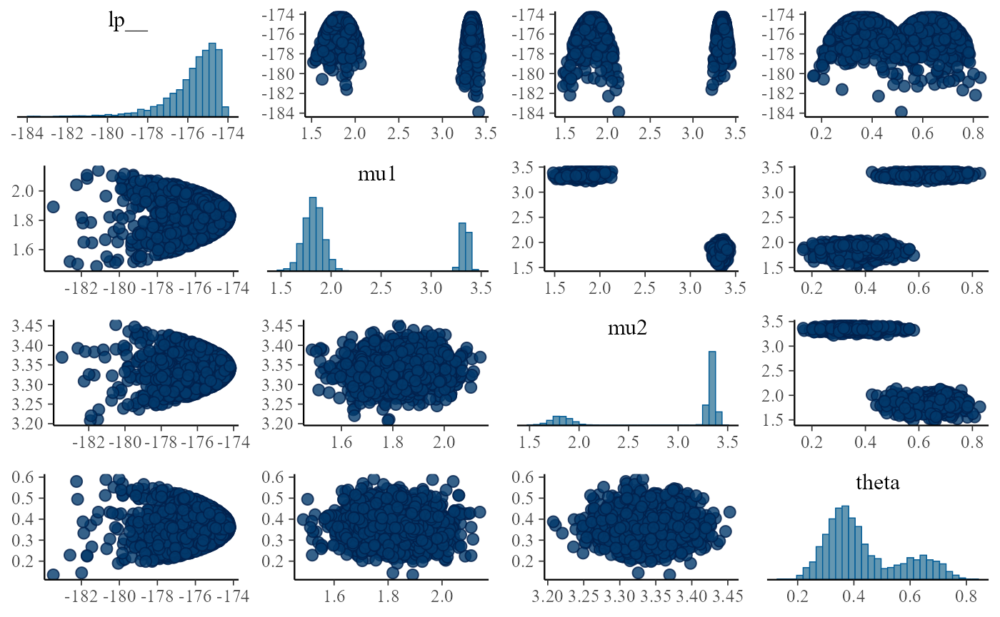
We clearly see two modes. And upon reflection, it is not a lot surprising why: swapping mu1 with mu2 while also changing theta for 1 - theta gives exactly the same likelihood - because the ordering does not matter. A more detailed explanation of this type of problem is at https://betanalpha.github.io/assets/case_studies/identifying_mixture_models.html
Fixing ordering
We can easily fix the ordering of the mus by using the ordered built-in type.
model_fixed_ordered <- cmdstan_model("small_model_workflow/mixture_fixed_ordered.stan")
backend_fixed_ordered <- SBC_backend_cmdstan_sample(model_fixed_ordered) We also need to update the generator to match the new names and ordering constant:
generator_func_ordered <- function(N) {
# If the priors for all components of an ordered vector are the same
# then just sorting the result of a generator is enough to create
# a valid sample from the ordered vector
mu <- sort(rnorm(2, 3, 1))
theta <- runif(1)
y <- numeric(N)
for(n in 1:N) {
if(runif(1) < theta) {
y[n] <- rpois(1, exp(mu[1]))
} else {
y[n] <- rpois(1, exp(mu[2]))
}
}
list(
parameters = list(
mu = mu,
theta = theta
),
generated = list(
N = N,
y = y
)
)
}
generator_ordered <- SBC_generator_function(generator_func_ordered, N = 50)We are kind of confident (and the model fits quickly), so we’ll already start with 10 datasets.
set.seed(3785432)
datasets_ordered_10 <- generate_datasets(generator_ordered, 10)
results_fixed_ordered <- compute_results(datasets_ordered_10, backend_fixed_ordered)## - 2 (20%) fits had at least one Rhat > 1.01. Largest Rhat was 1.207.## - 2 (20%) fits had tail ESS undefined or less than half of the maximum rank, potentially skewing the rank statistics. The lowest tail ESS was NA.
## If the fits look good otherwise, increasing `thin_ranks` (via recompute_statistcs) or number of posterior samples (by refitting) might help.## - 2 (20%) fits had divergent transitions. Maximum number of divergences was 145.## Not all diagnostics are OK. You can learn more by inspecting $default_diagnostics, $backend_diagnostics and/or investigating $outputs/$messages/$warnings for detailed output from the backend.
results_fixed_ordered$stats## # A tibble: 30 x 15
## parameter simulated_value rank z_score mean median sd mad q5
## <chr> <dbl> <dbl> <dbl> <dbl> <dbl> <dbl> <dbl> <dbl>
## 1 mu[1] 0.475 99 -0.400 0.559 0.605 0.211 0.162 0.151
## 2 mu[2] 0.773 34 -0.891 1.75 1.27 1.09 0.631 0.706
## 3 theta 0.282 23 -1.92 0.773 0.890 0.256 0.152 0.217
## 4 mu[1] 3.06 304 0.778 2.95 3.00 0.140 0.0872 2.64
## 5 mu[2] 3.13 240 -0.208 3.19 3.12 0.269 0.0650 3.05
## 6 theta 0.650 282 0.538 0.466 0.431 0.341 0.485 0.0171
## 7 mu[1] 1.85 4 -2.31 2.02 2.02 0.0733 0.0753 1.90
## 8 mu[2] 3.30 143 -0.334 3.32 3.32 0.0395 0.0397 3.25
## 9 theta 0.511 172 -0.115 0.519 0.519 0.0719 0.0733 0.401
## 10 mu[1] 2.70 374 1.41 2.62 2.62 0.0566 0.0564 2.52
## # ... with 20 more rows, and 6 more variables: q95 <dbl>, rhat <dbl>,
## # ess_bulk <dbl>, ess_tail <dbl>, max_rank <int>, dataset_id <int>There are fits with high R-hats and low ESS. Let’s look at the pairs plot:
problematic_fit_id <- 2
problematic_fit <- results_fixed_ordered$fits[[problematic_fit_id]]
mcmc_pairs(problematic_fit$draws(), np = nuts_params(problematic_fit))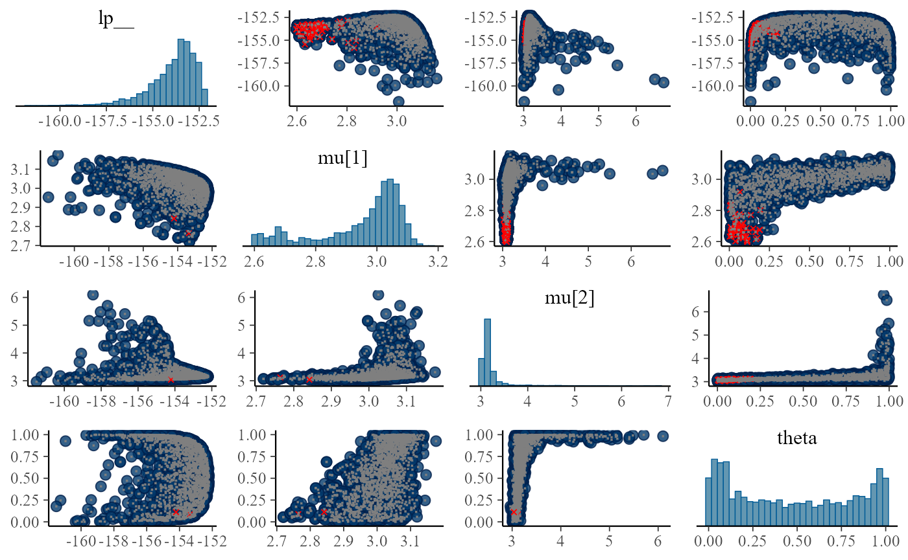
There is a lot of ugly stuff going on. Notably, one can notice that the posterior of theta is bimodal, preferring either almost 0 or almost 1 - and when that happens, the mean of one of the components is almost unconstrained. Why does that happen? The key to the answer is in the simulated values for the component means:
subset_draws(datasets_ordered_10$parameters, draw = problematic_fit_id)## # A draws_matrix: 1 iterations, 1 chains, and 3 variables
## variable
## draw mu[1] mu[2] theta
## 2 3.1 3.1 0.65We were unlucky enough to simulate a dataset where both components have almost the same mean and thus we are actually looking at a dataset that is not really a mixture. Mixture models can misbehave badly in such cases (see once again the https://betanalpha.github.io/assets/case_studies/identifying_mixture_models.html#5_singular_components_and_computational_issues) for a bit more detailed dive into this particular problem.
Fixing degenerate components?
What to do about this? Fixing the model to handle such cases gracefully is hard. But the problem is basically our prior - we want to express that (since we are fitting a two component model), we don’t expect the means to be too similar. So if we can change our simulation to avoid this, we’ll be able to proceed with SBC. If such a pattern appeared in real data, we would still have a problem, but we would notice thanks to the diagnostics.
This can definitely be done. But another way is to just ignore the datasets that had divergences for SBC calculations. It turns out that if we remove datasets in a way that only depends on the observed data (and not on unobserved parameters), the SBC identity is preserved and we can use SBC without modifications. The resulting check is however telling us something only for datasets that were not rejected. In this case this is not a big issue: if a fit had divergent transitions, we would not trust it anyway, so removing fits with divergent transitions is not such a big deal.
For more details see the rejection_sampling vignette.
So let us subset the results:
dataset_ids_to_keep <- results_fixed_ordered$backend_diagnostics$dataset_id[results_fixed_ordered$backend_diagnostics$n_divergent == 0]
# Equivalent tidy version if you prefer
# dataset_ids_to_keep <- results_fixed_ordered$backend_diagnostics %>%
# dplyr::filter(n_divergent == 0) %>%
# dplyr::pull(dataset_id)
results_fixed_ordered_subset <- results_fixed_ordered[dataset_ids_to_keep]
summary(results_fixed_ordered_subset)## SBC_results with 8 total fits.
## - No fits had errors.
## - No fits gave warnings.
## - No fits had Rhat > 1.01.
## - All fits had tail ESS > half of the maximum rank.
## - The lowest bulk ESS was 1073
## - No fits had failed chains.
## - No fits had divergent transitions.
## - No fits had iterations that saturated max treedepth.
## - No fits had steps rejected.
## - Maximum time per chain was 9.663 sec.This gives us no obvious problems.
plot_ecdf_diff(results_fixed_ordered_subset) So we can run for more iterations:
So we can run for more iterations:
datasets_ordered_100 <- generate_datasets(generator_ordered, 100)
results_fixed_ordered_100 <- compute_results(datasets_ordered_100, backend_fixed_ordered)## - 22 (22%) fits had at least one Rhat > 1.01. Largest Rhat was 1.317.## - 19 (19%) fits had tail ESS undefined or less than half of the maximum rank, potentially skewing the rank statistics. The lowest tail ESS was NA.
## If the fits look good otherwise, increasing `thin_ranks` (via recompute_statistcs) or number of posterior samples (by refitting) might help.## - 26 (26%) fits had divergent transitions. Maximum number of divergences was 238.## - 4 (4%) fits had some steps rejected. Maximum number of rejections was 1.## Not all diagnostics are OK. You can learn more by inspecting $default_diagnostics, $backend_diagnostics and/or investigating $outputs/$messages/$warnings for detailed output from the backend.Once again we subset to keep only non-divergent fits
dataset_ids_to_keep <- results_fixed_ordered_100$backend_diagnostics$dataset_id[results_fixed_ordered_100$backend_diagnostics$n_divergent == 0]
# Equivalent tidy version
# dataset_ids_to_keep <- results_fixed_ordered_100$backend_diagnostics %>%
# dplyr::filter(n_divergent == 0) %>%
# dplyr::pull(dataset_id)
results_fixed_ordered_100_subset <- results_fixed_ordered_100[dataset_ids_to_keep]
summary(results_fixed_ordered_100_subset)## SBC_results with 74 total fits.
## - No fits had errors.
## - No fits gave warnings.
## - 1 (1%) fits had at least one Rhat > 1.01. Largest Rhat was 1.014.
## - 1 (1%) fits had tail ESS undefined or less than half of the maximum rank, potentially skewing the rank statistics. The lowest tail ESS was 171.
## If the fits look good otherwise, increasing `thin_ranks` (via recompute_statistcs) or number of posterior samples (by refitting) might help.
## - The lowest bulk ESS was 363
## - No fits had failed chains.
## - No fits had divergent transitions.
## - No fits had iterations that saturated max treedepth.
## - 4 (5%) fits had some steps rejected. Maximum number of rejections was 1.
## - Maximum time per chain was 11.46 sec.## Not all diagnostics are OK. You can learn more by inspecting $default_diagnostics, $backend_diagnostics and/or investigating $outputs/$messages/$warnings for detailed output from the backend.And combine with the previous fits to not waste our computational effort.
results_fixed_ordered_combined <- bind_results(results_fixed_ordered_subset, results_fixed_ordered_100_subset)
plot_ecdf_diff(results_fixed_ordered_combined)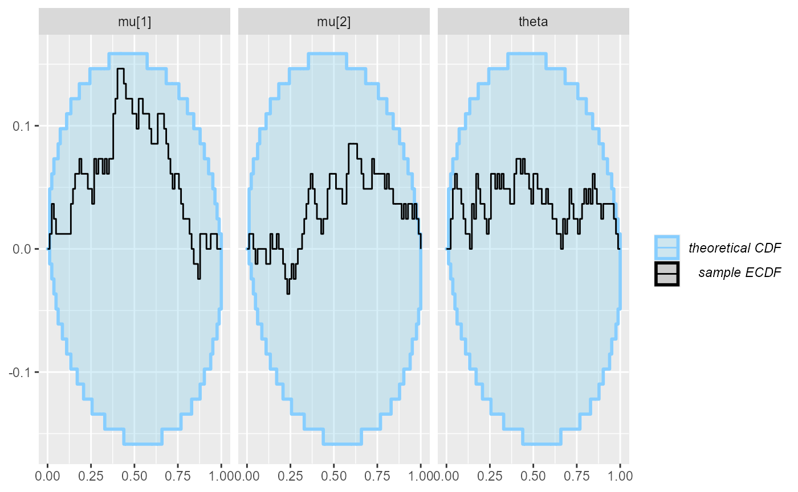
Seems fairly well within the expected bounds. We could definitely run more iterations if we wanted to have a more strict check, but for now, we are happy.
Note: it turns out that extending the model to more components becomes somewhat tricky as the model can become sensitive to initialization and the problem of data that can be explained by fewer components than the model has becomes more prevalent.
Beta regression component
Maybe treating this as a logistic regression component would have been wiser. But since I actually realized that only after spending some time with the beta regression task, I am gonna keep it in - it just demonstrates that a real workflow can be messy.
model_beta_first <- cmdstan_model("small_model_workflow/beta_first.stan")
backend_beta_first <- SBC_backend_cmdstan_sample(model_beta_first)
generator_func_beta_first <- function(N_obs, N_predictors) {
repeat {
beta <- matrix(rnorm(N_predictors * 2, 0, 1), nrow = 2, ncol = N_predictors)
x <- matrix(rnorm(N_predictors * N_obs, 0, 1), nrow = N_predictors, ncol = N_obs)
x[1, ] <- 1 # Intercept
y <- array(NA_real_, N_obs)
for(n in 1:N_obs) {
linpred <- rep(0, 2)
for(c in 1:2) {
for(p in 1:N_predictors) {
linpred[c] <- linpred[c] + x[p, n] * beta[c, p]
}
}
y[n] <- rbeta(1, exp(linpred[1]), exp(linpred[2]))
}
if(all(y > 1e-7) && all(y < 1 - 1e-7)) {
break;
}
}
list(
parameters = list(
beta = beta
),
generated = list(
N_obs = N_obs,
N_predictors = N_predictors,
y = y,
x = x
)
)
}
generator_beta_first <- SBC_generator_function(generator_func_beta_first, N_obs = 50, N_predictors = 3)
set.seed(3325488)
datasets_beta_first <- generate_datasets(generator_beta_first, 10)
results_beta_first_10 <- compute_results(datasets_beta_first, backend_beta_first)## - 1 (10%) fits had divergent transitions. Maximum number of divergences was 6.## - 10 (100%) fits had some steps rejected. Maximum number of rejections was 22.## Not all diagnostics are OK. You can learn more by inspecting $default_diagnostics, $backend_diagnostics and/or investigating $outputs/$messages/$warnings for detailed output from the backend.
plot_ecdf_diff(results_beta_first_10)
mcmc_pairs(results_beta_first_10$fits[[3]]$draws())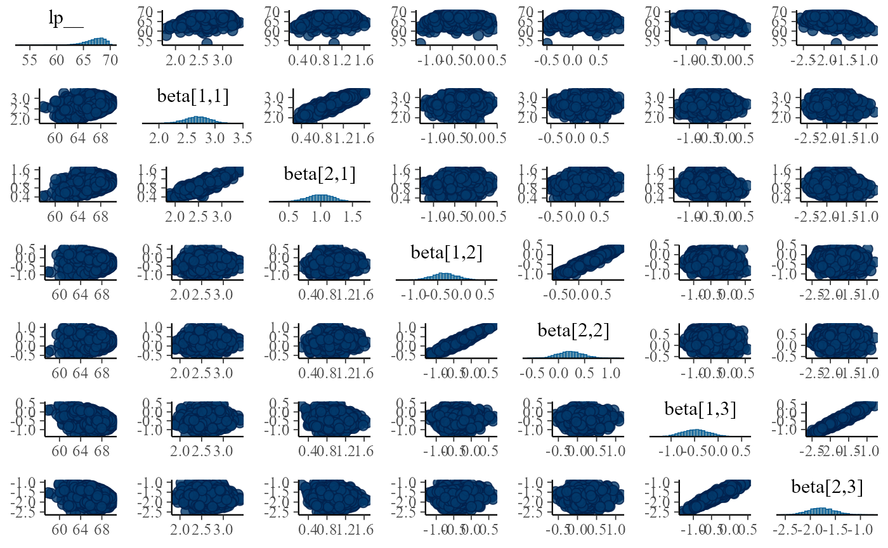
This is a very ugly plot, but we see some correlations between the corresponding beta, let’s have a closer look.
for(i in 1:5) {
fit <- results_beta_first_10$fits[[i]]
print(mcmc_pairs(fit$draws(), pars = c("beta[1,1]", "beta[2,1]","beta[1,2]", "beta[2,2]"), np = nuts_params(fit)))
}
 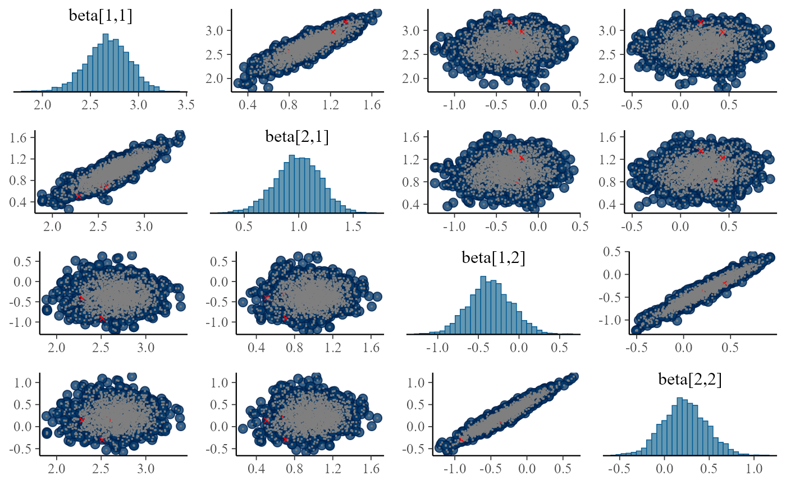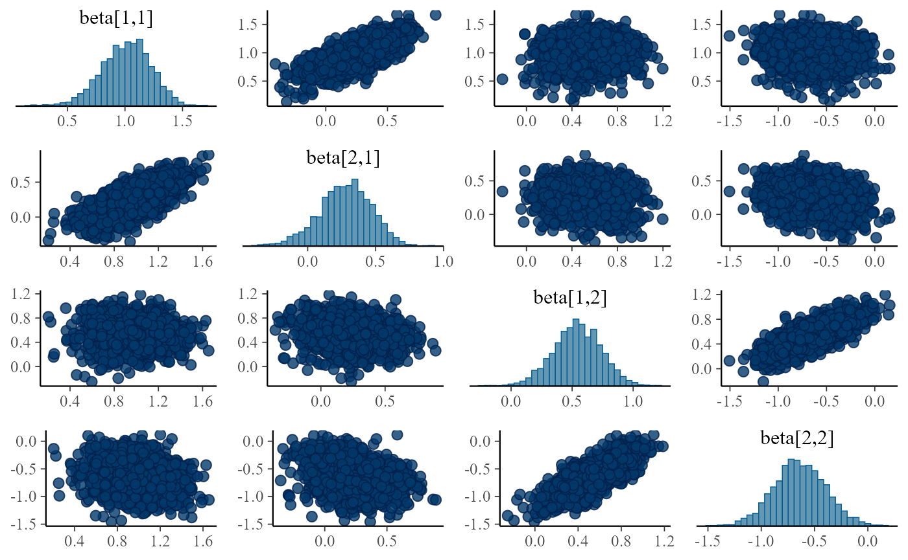
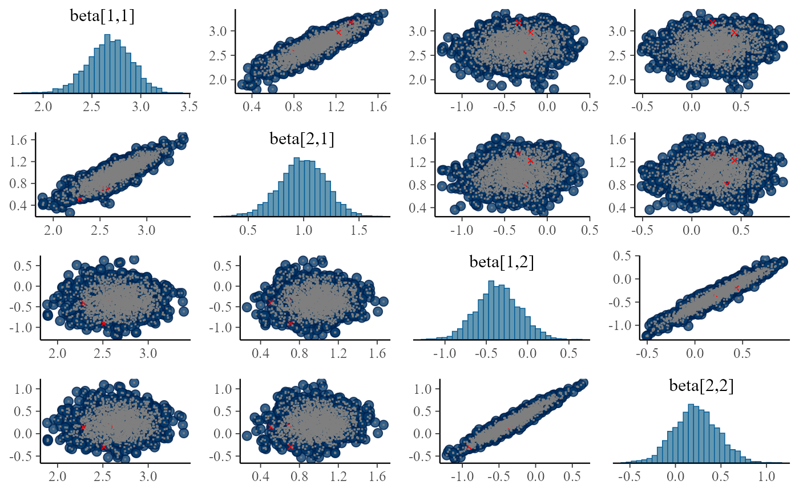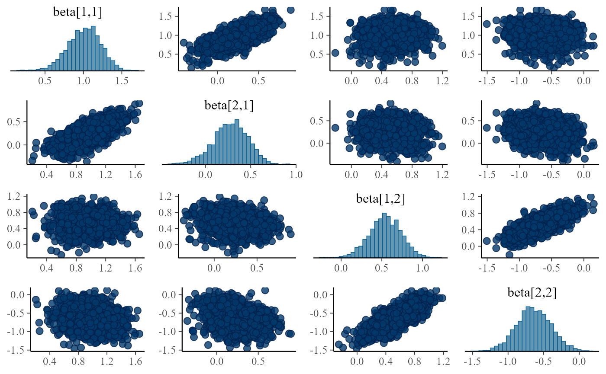
Turns out the correlations are in all fits, althoug sometimes they are relatively weak and the sampler is able to handle the posterior, it is potentially troubling. The main issue is that we plan to integrate this model with other components and problems that can be tolerated in a single component might interact with other components and become problematic.
We can even understand the reason for the positive correlation - it is because mean of beta distribution is \(\frac{\alpha}{\alpha + \beta}\)…
We can also decide whether to keep the full flexibility and allow predictors for precision.
Parametrizing the beta distribution via mean
This also makes much more sense for the bigger task - combining with the mixture component.
model_beta_precision <- cmdstan_model("small_model_workflow/beta_precision.stan")
backend_beta_precision <- SBC_backend_cmdstan_sample(model_beta_precision)
generator_func_beta_precision <- function(N_obs, N_predictors) {
repeat {
beta <- rnorm(N_predictors, 0, 1)
phi <- rlnorm(1, 3, 1)
x <- matrix(rnorm(N_predictors * N_obs, 0, 1), nrow = N_predictors, ncol = N_obs)
x[1, ] <- 1 # Intercept
y <- array(NA_real_, N_obs)
for(n in 1:N_obs) {
linpred <- 0
for(p in 1:N_predictors) {
linpred <- linpred + x[p, n] * beta[p]
}
mu <- plogis(linpred)
y[n] <- rbeta(1, mu * phi, (1 - mu) * phi)
}
if(all(y > 1e-7) && all(y < 1 - 1e-7)) {
break;
}
}
list(
parameters = list(
beta = beta,
phi = phi
),
generated = list(
N_obs = N_obs,
N_predictors = N_predictors,
y = y,
x = x
)
)
}
generator_beta_precision <- SBC_generator_function(generator_func_beta_precision, N_obs = 50, N_predictors = 3)
set.seed(46988234)
datasets_beta_precision_10 <- generate_datasets(generator_beta_precision, 10)
results_beta_precision_10 <- compute_results(datasets_beta_precision_10, backend_beta_precision)## - 10 (100%) fits had some steps rejected. Maximum number of rejections was 15.## Not all diagnostics are OK. You can learn more by inspecting $default_diagnostics, $backend_diagnostics and/or investigating $outputs/$messages/$warnings for detailed output from the backend.
plot_ecdf_diff(results_beta_precision_10)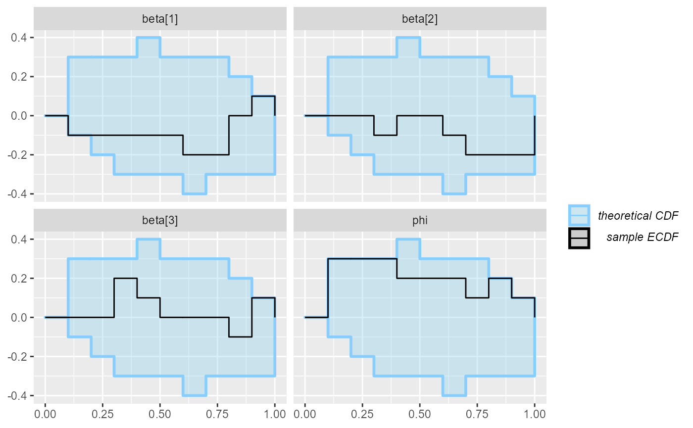
datasets_beta_precision_90 <- generate_datasets(generator_beta_precision, 90)
results_beta_precision_100 <-
bind_results(
results_beta_precision_10,
compute_results(datasets_beta_precision_90, backend_beta_precision))## - 90 (100%) fits had some steps rejected. Maximum number of rejections was 22.## Not all diagnostics are OK. You can learn more by inspecting $default_diagnostics, $backend_diagnostics and/or investigating $outputs/$messages/$warnings for detailed output from the backend.
datasets_beta_precision_100 <- bind_datasets(datasets_beta_precision_10, datasets_beta_precision_90)
plot_ecdf_diff(results_beta_precision_100)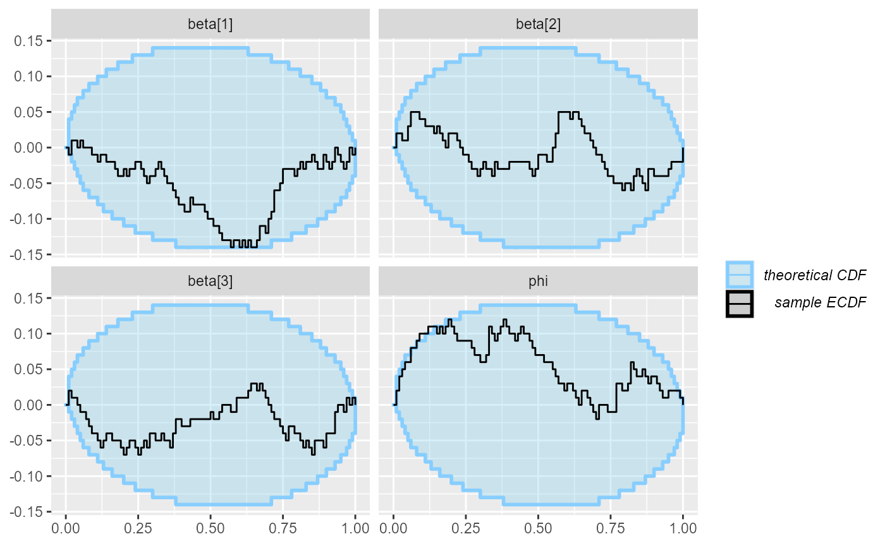
Missing prior!
This type of problem is often not very well visible from SBC (see the limits_of_SBC vignette for more detailed discussion)
Adding missing prior
model_beta_precision_fixed_prior <- cmdstan_model("small_model_workflow/beta_precision_fixed_prior.stan")
backend_beta_precision_fixed_prior <- SBC_backend_cmdstan_sample(model_beta_precision_fixed_prior)
results_beta_precision_fixed_prior <- compute_results(datasets_beta_precision_100, backend_beta_precision_fixed_prior)## - 100 (100%) fits had some steps rejected. Maximum number of rejections was 21.## Not all diagnostics are OK. You can learn more by inspecting $default_diagnostics, $backend_diagnostics and/or investigating $outputs/$messages/$warnings for detailed output from the backend.
plot_ecdf_diff(results_beta_precision_fixed_prior)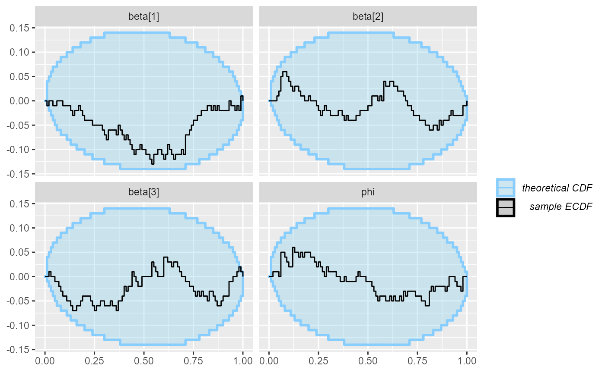
datasets_beta_precision_100b <- generate_datasets(generator_beta_precision, 100)
results_beta_precision_fixed_prior_200 <-
bind_results(
results_beta_precision_fixed_prior,
compute_results(datasets_beta_precision_100b, backend_beta_precision_fixed_prior))## - 100 (100%) fits had some steps rejected. Maximum number of rejections was 20.## Not all diagnostics are OK. You can learn more by inspecting $default_diagnostics, $backend_diagnostics and/or investigating $outputs/$messages/$warnings for detailed output from the backend.
plot_ecdf_diff(results_beta_precision_fixed_prior_200)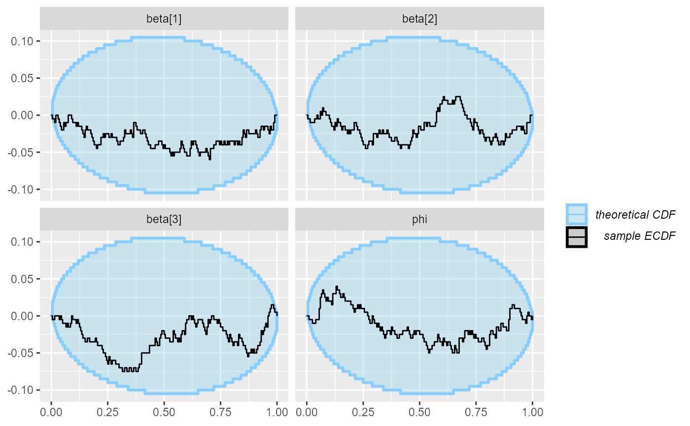
Putting it together
model_combined <- cmdstan_model("small_model_workflow/combined_first.stan")
backend_combined <- SBC_backend_cmdstan_sample(model_combined)
generator_func_combined <- function(N_obs, N_predictors) {
# If the priors for all components of an ordered vector are the same
# then just sorting the result of a generator is enough to create
# a valid sample from the ordered vector
mu <- sort(rnorm(2, 3, 1))
beta <- rnorm(N_predictors, 0, 1)
x <- matrix(rnorm(N_predictors * N_obs, 0, 1), nrow = N_predictors, ncol = N_obs)
x[1, ] <- 1 # Intercept
y <- array(NA_real_, N_obs)
for(n in 1:N_obs) {
linpred <- 0
for(p in 1:N_predictors) {
linpred <- linpred + x[p, n] * beta[p]
}
theta <- plogis(linpred)
if(runif(1) < theta) {
y[n] <- rpois(1, exp(mu[1]))
} else {
y[n] <- rpois(1, exp(mu[2]))
}
}
list(
parameters = list(
beta = beta,
mu = mu
),
generated = list(
N_obs = N_obs,
N_predictors = N_predictors,
y = y,
x = x
)
)
}
generator_combined <- SBC_generator_function(generator_func_combined, N_obs = 50, N_predictors = 3)
set.seed(5749955)
dataset_combined <- generate_datasets(generator_combined, 200)
results_combined <- compute_results(dataset_combined, backend_combined)## - 7 (4%) fits had at least one Rhat > 1.01. Largest Rhat was 1.05.## - 8 (4%) fits had tail ESS undefined or less than half of the maximum rank, potentially skewing the rank statistics. The lowest tail ESS was NA.
## If the fits look good otherwise, increasing `thin_ranks` (via recompute_statistcs) or number of posterior samples (by refitting) might help.## - 20 (10%) fits had divergent transitions. Maximum number of divergences was 66.## - 2 (1%) fits had some steps rejected. Maximum number of rejections was 2.## Not all diagnostics are OK. You can learn more by inspecting $default_diagnostics, $backend_diagnostics and/or investigating $outputs/$messages/$warnings for detailed output from the backend.
plot_ecdf_diff(results_combined)
Adding rejection sampling
fanos <- vapply(dataset_combined$generated, function(dataset) { var(dataset$y) / mean(dataset$y) }, FUN.VALUE = 0)
plot(fanos, results_combined$backend_diagnostics$n_divergent)
hist(fanos[results_combined$backend_diagnostics$n_divergent > 0])
generator_func_combined_reject <- function(N_obs, N_predictors) {
if(N_obs < 5) {
stop("Too low N_obs for this simulator")
}
repeat {
# If the priors for all components of an ordered vector are the same
# then just sorting the result of a generator is enough to create
# a valid sample from the ordered vector
mu <- sort(rnorm(2, 3, 1))
beta <- rnorm(N_predictors, 0, 1)
x <- matrix(rnorm(N_predictors * N_obs, 0, 1), nrow = N_predictors, ncol = N_obs)
x[1, ] <- 1 # Intercept
y <- array(NA_real_, N_obs)
for(n in 1:N_obs) {
linpred <- 0
for(p in 1:N_predictors) {
linpred <- linpred + x[p, n] * beta[p]
}
theta <- plogis(linpred)
if(runif(1) < theta) {
y[n] <- rpois(1, exp(mu[1]))
} else {
y[n] <- rpois(1, exp(mu[2]))
}
}
if(var(y) / mean(y) > 1.5) {
break;
}
}
list(
parameters = list(
beta = beta,
mu = mu
),
generated = list(
N_obs = N_obs,
N_predictors = N_predictors,
y = y,
x = x
)
)
}
generator_combined_reject <- SBC_generator_function(generator_func_combined_reject, N_obs = 50, N_predictors = 3)
set.seed(44685226)
dataset_combined_reject <- generate_datasets(generator_combined_reject, 200)
results_combined_reject <- compute_results(dataset_combined_reject, backend_combined)## - 1 (0%) fits had some steps rejected. Maximum number of rejections was 2.## Not all diagnostics are OK. You can learn more by inspecting $default_diagnostics, $backend_diagnostics and/or investigating $outputs/$messages/$warnings for detailed output from the backend.
plot_ecdf_diff(results_combined_reject)
set.seed(1395367854)
dataset_combined_reject_more <- generate_datasets(generator_combined_reject, 300)
results_combined_reject_more <- bind_results(
results_combined_reject,
compute_results(dataset_combined_reject_more, backend_combined)
)## - 2 (1%) fits had at least one Rhat > 1.01. Largest Rhat was 1.093.## - 2 (1%) fits had tail ESS undefined or less than half of the maximum rank, potentially skewing the rank statistics. The lowest tail ESS was NA.
## If the fits look good otherwise, increasing `thin_ranks` (via recompute_statistcs) or number of posterior samples (by refitting) might help.## - 2 (1%) fits had divergent transitions. Maximum number of divergences was 119.## - 3 (1%) fits had some steps rejected. Maximum number of rejections was 2.## Not all diagnostics are OK. You can learn more by inspecting $default_diagnostics, $backend_diagnostics and/or investigating $outputs/$messages/$warnings for detailed output from the backend.
plot_ecdf_diff(results_combined_reject_more)